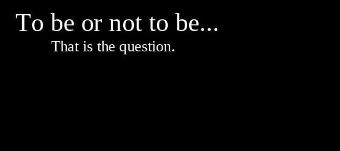
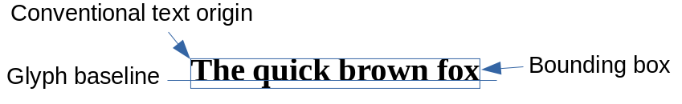
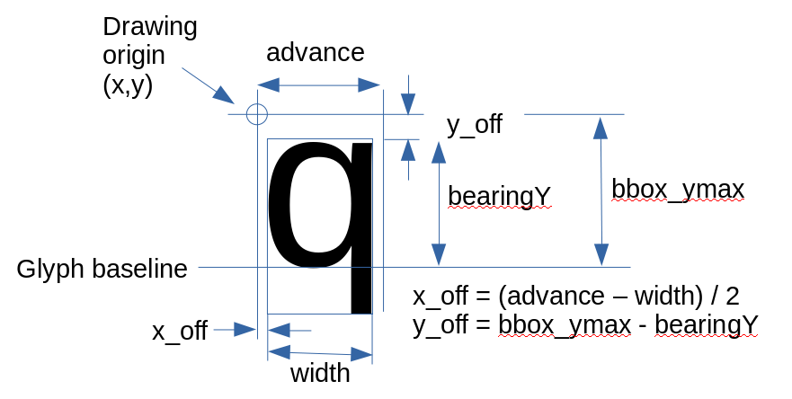

Using the FreeType library to render text nicely onto a Linux framebuffer
 This article is about writing nicely-rendered text to a Linux display
device, without using X, or any kind of graphical environment,
from a C or C++ program.
We'll use the FreeType library to write proportional, anti-aliased
text directly to the framebuffer.
This article is about writing nicely-rendered text to a Linux display
device, without using X, or any kind of graphical environment,
from a C or C++ program.
We'll use the FreeType library to write proportional, anti-aliased
text directly to the framebuffer.
I must admit from the outset that there's simply no need to do this on any desktop Linux system -- it may not even be possible, and there are certainly easier approaches to rendering text. However, in an embedded system with no desktop or graphical interface, this method may be the most efficient way to get reasonable text. Many applications that write to the framebuffer use ugly, bitmapped, fixed-pitch fonts. It doesn't take much coding, and only a few additional dependencies, to do better.
This article describes how to use the FreeType API to load and render TrueType fonts. Although I'm assuming that the output is to the framebuffer, FreeType can be used with pixel-based device. Of course, the fine detail will differ from one device to the next.
My main application is adding text labels to user interface elements on a touch-screen display rather than, say, word processing. I don't expect to draw a lot of text, and there is some flexibility in its placement. The method I describe has a number of inefficiencies, that don't cause significant problems because of the nature of the application.
I have to point out that, despite the title of the article, I'm
not going to explain in detail how to write to the framebuffer. I
already did that in
my article on using the framebuffer in C.
For the purposes of this article, I'm going to assume that you
have available a function framebuffer_set_pixel() that
sets a particular pixel to a particular colour. The implementation
of this function and, indeed, all the code in this article, is in the
sample application in my GitHub repository.
The following screenshot shows the technique described in this article in action -- it is a capture of a Raspberry Pi framebuffer, after writing text to it.

Note that the text is of variable pitch, and is anti-aliased to create smooth-looking text on a relatively low-resolution display. It takes on a modest amount of programming to produce this output: the FreeType functions are used essentially in their default modes of operation.
Using FreeType -- an overview
Getting started with FreeType can be frustrating. Although there is satisfactory detailed documentation on specific functions and data structures, there's very little to explain in outline how these functions and structures should be used. In general, rendering text with FreeType has the following steps.
Initialize the FreeType library.
Create a typeface from a font file.
Request a size for the typeface (and this is only a request -- see below).
Get a glyph index that represents a specific character.
Load the glyph into memory, which makes the glyph metrics and shape data available.
Use the metrics to get the exact pixel size, so the glyph bitmaps can be aligned and spaced correctly on the display.
Render the glyph into a bitmap in memory.
Copy the glyph bitmap to the display device, using the metrics to align the bitmap correctly.
Eventually, close the library.
Of course, most of these steps will be repeated many times in a particular application. I will explain all of them in detail in the sections that follow. I won't be providing full code in this article but, of course, it is available in the sample application.
Note:
FreeType uses various units of measure. Its basic size measure is 64ths of a pixel, which is why you'll see many/ 64operations in the sample code. Some programmers write this as a right-shift ">>6" in the hope of saving a few microseconds.
Compiling and linking with FreeType
Conventionally, a C or C++ program that uses FreeType will incorporate the following headers, which define all the API functions and structures:#include <freetype2/ft2build.h> #include <freetype/freetype.h>You'll probably need to tell the compiler the location of these headers, as they usually won't be in a standard place. In a desktop Linux, you can probably get the location using
pkg-config --cflags libfreetype2.
On an embedded system that you've built yourself, you'll presumably
know where these files are. Specify the location to the C
compiler in the usual way:
$ gcc -I /usr/include/freetype2 ...You'll also need to tell the linker to use the FreeType library:
$ gcc ... -lfreetype
If the library is in a non-standard location, you might need to
use the -L switch to gcc to indicate
the directory where it can be found.
The Makefile in the sample application shows the use of these
gcc settings.
Opening, and eventually closing, the FreeType library
This at least is straightforward:
FT_Library ft;
if (FT_Init_FreeType (ft) == 0)
{
// OK -- carry on
// Then tidy up
FT_Done_FreeType (ft);
}
else
{
// Handle error
}
It's worth pointing out that, although the type FT_Library
references a C struct this type, and most of the other
FT_xxx types, are defined as pointers to structures,
not structures. This 'hiding' of pointers behind a type definition is,
I think, not the most transparent of programming practices. It isn't
at all obvious that we're dealing with pointers in these
API calls. Still, it is what it is.
Creating a typeface from a font file
In FreeType, a specific typeface is represented as
an FT_Face type (or, rather, the entity this points
to -- see the moan above). The FT_Face reference
will be used in most API calls that manipulate glyphs.
FT_Face face;
if (FT_New_Face (ft, "myfont.ttf", 0, &face) == 0)
{
// Do stuff
}
else
{
// Handle error
}
FT_New_Face takes the FT_Library reference
created when the library was opened, and assigns a value to
face via its pointer. This function must be supplied
with the name of a font file. The third argument -- 0 in this
example -- is the index of a font within a font file. 0
refers to the first (and usually only) font in the file.
There's no particular reason to "close" or "delete" an
FT_Face. These objects usually have application
lifetime, and will be cleaned up along with the library.
Requesting a size for a typeface
There are various ways to do this. If you want to set (or, rather, request) a specific pixel size, use this variant:
FT_Face face = ...;
int size = 20; // pixels high
if (FT_Set_Pixel_Sizes (face, 0, size) == 0)
{
// Do stuff
}
else
{
// Handle error
}
You can specify zero for the width, as in this example, and let the library work out the width from the height; or you can specify zero for the height and have the library work out the height from the width. Or you can specify both width and height, with results ranging from interesting to catastrophic.
FT_Set_Pixel_Sizes can, in principle, fail, if the
requested size cannot be provided, even to an approximation.
I've not known this to happen but, presumably, there are valid
TTF files that contain non-scalable fonts.
set_pixel_sizes is a bad name, because it gives the impression
that you'll actually get a face of the specified size. In practice,
you'll usually get a face that is near the requested size,
but not exactly the same. The discrepancies can, in some cases,
be striking. If you really, really need an exact pixel size, then
I think the only way to achieve this is to scale the bitmap after
rendering. In practice, we often have to adjust the way text and
other elements are aligned, to
allow for the real size of the glyph bitmaps.
Get a glyph index for a character
Here's the basic method:
FT_Face face = ...
FT_ULong character = 'x';
FT_UInt gi = FT_Get_Char_Index (face, character);
if (gi != 0)
{
// Do stuff
}
else
{
// Handle error
}
In practice, the character argument will probably be a Unicode
code point. Unicode code points between 32 and 127 are essentially
the same as ASCII, so ASCII codes can be used directly.
Most alphabetic fonts use Unicode character codes; the handling
of TTF fonts that don't is way, way
beyond the scope of this article.
Regardless of the form of character encoding, the programmer has to be prepared for the glyph not to exist in the font. All valid glyph indices are greater than zero; a return value of zero means that the specified character did not correspond to a glyph in the font.
Load the glyph into memory
We can control the specific data to load. To load the glyph shape data and the typeface metrics, do this:
FT_Face = ...; FT_UInt gi = ...; FT_Load_Glyph (face, gi, FT_LOAD_DEFAULT);
The other common usage of FT_Load_Glyph is with
FT_LOAD_NO_BITMAP. This loads only the metrics.
You can, and probably should, use this form for, example,
calculating how to lay out text -- loading the metrics is much
quicker than loading the glyph itself.
Using the Metrics
This is where things start to get fiddly. To understand this, we'll need a digression into how text layout is usually handled in programming.
Printed text -- and decently-rendered screen text -- is designed to be laid out so that the glyphs align along a baseline. This situation is easier to show than to explain: see the diagram below.

In English and most western scripts, some glyphs will extend below the baseline; most scripts will have glyphs that vary in height above the baseline. The use of accents complicates the picture, in ways that I don't want to go into here.
A given line of text will fit within an imaginary 'bounding box' -- a rectangle that encompasses all the glyphs, allowing for their differing sizes and alignments. While a typographer may specify the position of text with respect to its baseline, software libraries that draw text generally specify the location of the bounding box, and we shall do the same here. The point I've described as the 'conventional text origin' is the top-left corner of the bounding box. Placing text on the screen usually starts by specifying the coordinates of this point.
When printing multiple lines of text, evenly spacing the bounding boxes gives a subtly different effect than evenly spacing the baselines. However, it's much easier to work with bounding boxes programmatically.
Now here's the problem: When FreeType renders a glyph to a bitmap, none of the spacing is rendered, only the shape. That makes perfect sense -- there's no point wasting CPU cycles rendering blank space. However, this does mean that the programmer has to work out how to align the bitmaps without the bounding box, such that they are uniformly spaced, and so that the glyph baselines align. That is, we must align the glyphs independently in the horizontal and vertical directions, within the bounding box.
In practice, what all this means is that we must calculate
X and Y offsets -- in my sample program I use the variables
x_off and y_off -- that position
the glyph bitmap with respect to the drawing origin. This origin
is the top-left corner of the bounding box for the first character,
and then advances by a specific amount for each new character.
This situation is illustrated below:

The metrics advance, bearingY, etc.,
are all provided by the TrueType library when the glyph is
loaded. In summary, here is the code to calculate the offsets
of the bitmap from the current drawing origin.
FT_Face face = ... int bbox_ymax = face->bbox.yMax / 64; int glyph_width = face->glyph->metrics.width / 64; int advance = face->glyph->metrics.horiAdvance / 64; int x_off = (advance - glyph_width) / 2; int y_off = bbox_ymax - face->glyph->metrics.horiBearingY / 64;
Remember that all the metrics are, by default, in 64ths of a pixel.
Render the glyph into memory
Rendering makes the bitmap available. Within the face
reference, bitmap data becomes available at
face->glyph->bitmap, and we'll use that data
in the next step.
FT_Render_Glyph(face->glyph, FT_RENDER_MODE_NORMAL);
Drawing the bitmap
Having rendered the glyph, the bitmap data is now available as
face->glyph->bitmap.buffer. This data is a series
of 8-bit unsigned values, representing the intensity of the print. Pixels in
the main body of the glyph will have value 255, with lower-intensity
values around the edges to smooth the appearance.
The values in the buffer are arranged in rows (like a small version of a Linux framebuffer). That is, the first set of values is for the first bitmap row, the second for the second, and so on. Irritatingly, and also like a framebuffer, there can be unused values between the rows. These unused values are not padding -- they are simply a consequence of the way that the rendering is done.
The "width" of the bitmap is the number of displayed pixels in each row, while the "pitch" of the bitmap is the total number of (displayed and non-displayed) values. We need to take both these figures into account when drawing the pixels.
// x and y are the coordinates of the current drawing origin, starting
// at the top-left of the bounding box.
int x = ....;
int y = ....;
for (int i = 0; i < (int)face->glyph->bitmap.rows; i++)
{
// row_offset is the distance from the top of the framebuffer
// of the text bounding box
int row_offset = y + i + y_off;
for (int j = 0; j < (int)face->glyph->bitmap.width; j++)
{
unsigned char p =
face->glyph->bitmap.buffer [i * face->glyph->bitmap.pitch + j];
// Don't draw a zero value, unless you want to fill the bounding
// box with black.
if (p)
framebuffer_set_pixel (fb, x + j + x_off, row_offset, p, p, p);
}
}
// Move the x position, ready for the next character.
x += advance;
Final remarks
Using FreeType it's possible to create nicely-rendered, anti-aliased text on a framebuffer in, perhaps, fifty lines of C. There are a number of problems that I haven't addressed, particularly related to the use of non-western characters. I've also not described sophisticated rendering features, like sub-pixel rendering and optimization for a particular display device. My application doesn't require any of these things, but they are available for applications that do.